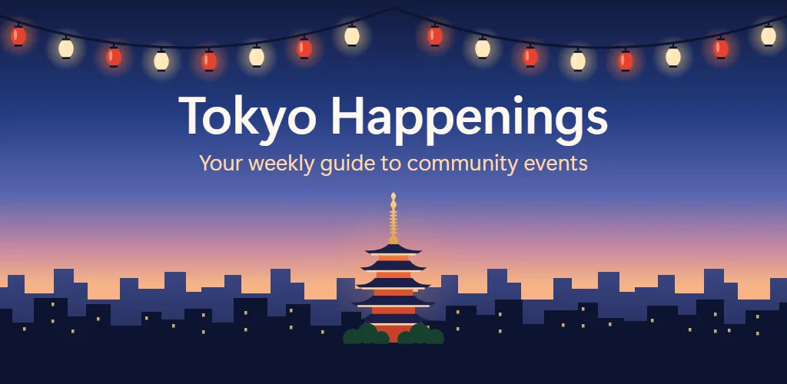
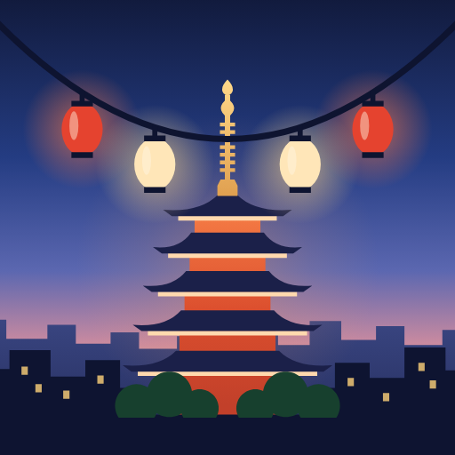
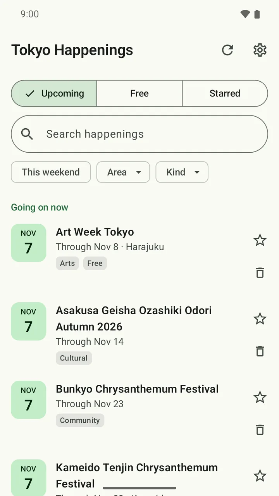
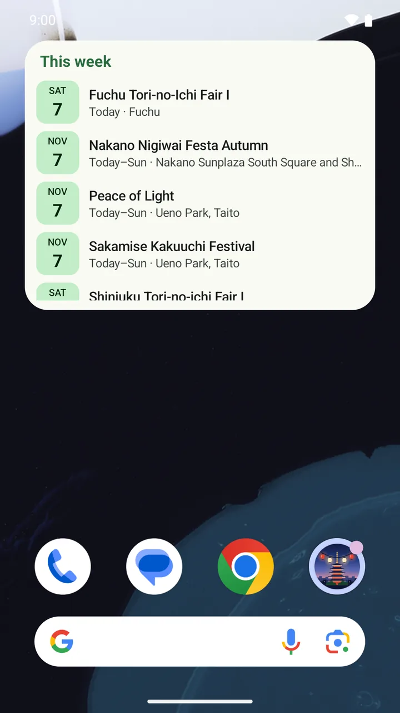
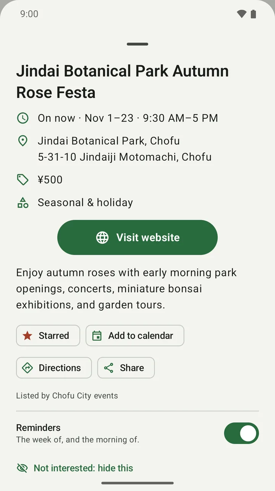
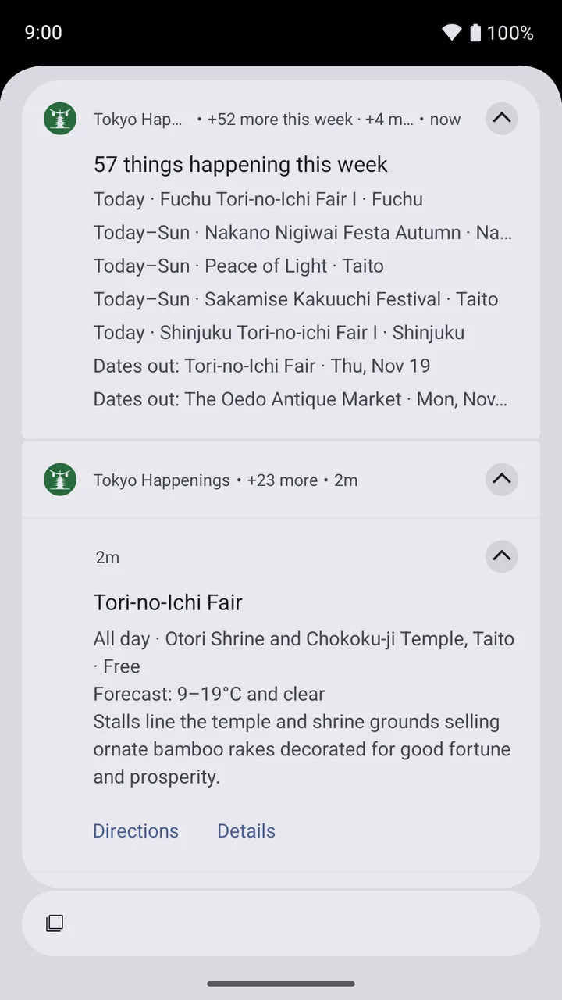
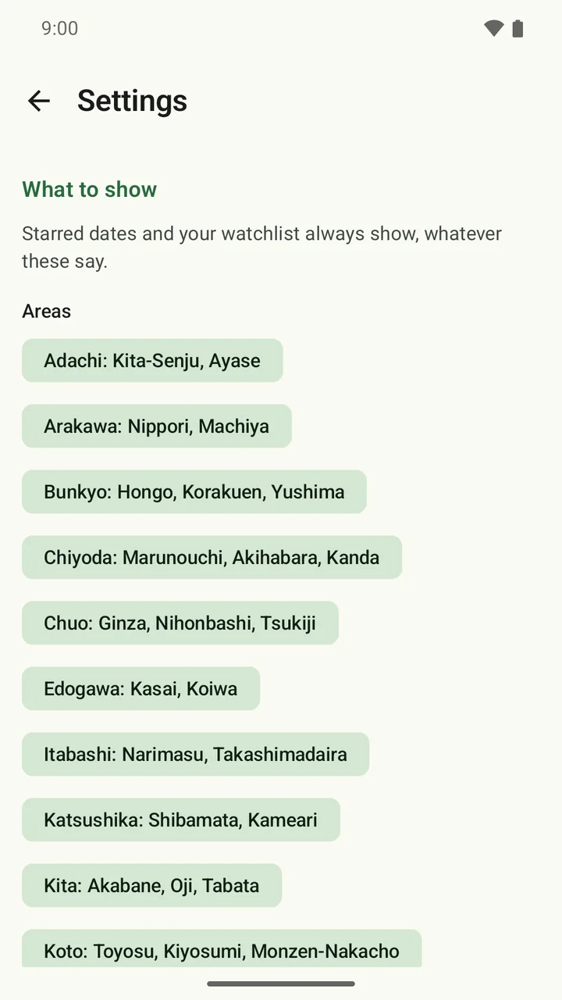
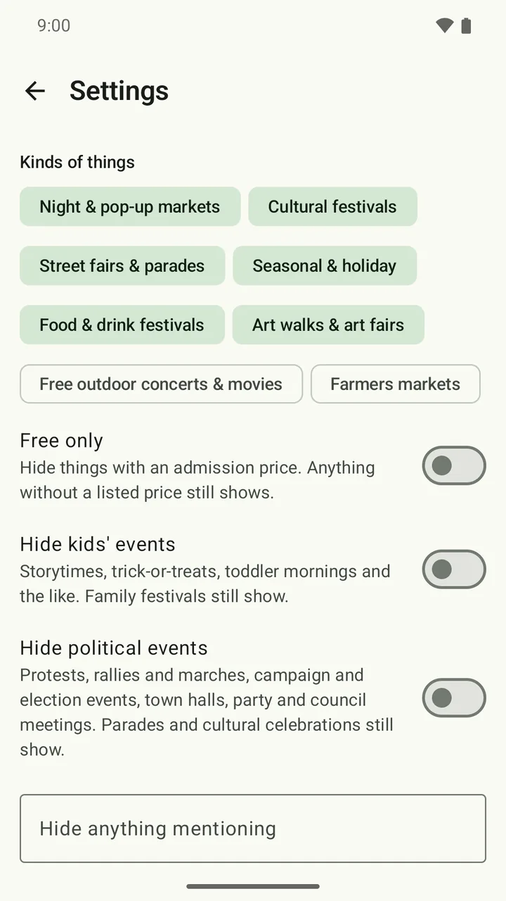

Weekly roundup
One notification. Your whole week.
See what's on this week and what was just announced for later, without opening calendar after calendar.
An Android events app for Tokyo, in English
Tokyo Happenings reads community calendars from across Tokyo, the wards' own Japanese ones included, and turns them into one short weekly roundup in English: matsuri, flea markets, seasonal festivals, and more.


Tokyo HappeningsCommunity events, in English
The good local stuff
Skip the ticket sites. Find the shrine festival down the street, the flea market in the park, and the bon odori you would otherwise hear about the day after.
Many of the best neighborhood events are only on the wards' and cities' own calendars, in Japanese. Every day those listings are put into English, so they arrive next to the English ones from GO TOKYO, Tokyo Weekender, Tokyo Cheapo, and others, with place names spelled the way your map spells them.
Less searching. More going.
Happenings does the repetitive work quietly, then gives you a useful heads-up when it matters.
Weekly roundup
See what's on this week and what was just announced for later, without opening calendar after calendar.
Morning-of reminders
Get the event time, directions, and the forecast for that ward, in °C.
Stars and calendar
Star an event, add it to your calendar, and let Happenings move it if the organizer changes the time or place.
Festival watchlist
The Sanja Matsuri, Koenji Awa Odori, and Tori-no-ichi are on watch from the start. Add your own, and hear the week the dates are announced.
Home-screen widget
Keep the next few events on your home screen so a good plan is always one glance away.

Set it once
Turn on the wards you care about, listed by what they're known for: Shibuya for Harajuku and Ebisu, Taito for Asakusa and Ueno. Add the Tama area, or farther out to Yokohama and Saitama.
Pick event types, show only free events, or hide anything by keyword.
Happenings checks public calendars, merges duplicates, and gives you the short version, in English.
Inside the app




Get the app
No account to make, nothing to sign up for, and no ads. Google Play keeps it up to date.
Get it onGoogle PlayAndroid 8 or later.
On an iPhone or a computer? Browse the events on the web and add them to your calendar.
Private by design
There is no account, no advertising, and no analytics or tracking code. Saved events, watchlists, and settings stay on your phone.
Read the full privacy policyYes. The wards' and cities' calendars are in Japanese, so every day their listings are put into English with Google's Gemini before the app or this site shows them. Places keep the spellings you'll find on a map, so you can search for them.
All 23 wards, each listed by its best-known neighborhoods, and the Tama area to the west: Kichijoji, Mitaka, Tachikawa, Hachioji, and the rest. Yokohama, Kawasaki, Saitama, and Chiba can be turned on too. Turn on only the ones you want.
No. There is no sign-in or profile. Your saved events, watchlist, and settings stay on your phone.
No. The app does not ask for location access. Distance starts from a ward or town you choose, and weather is requested for each event's ward or town.
The app works fully without it. If you add your own Gemini API key, Happenings can also read festival pages for their details and sort events more carefully. The app explains exactly what is sent before you add a key.
Concerts, sports, and ticket-resale listings are left out on purpose, and so are the classes, talks, and consultations on the ward calendars. The focus is community events such as matsuri, markets, festivals, fireworks, and fairs.
Yes. Dates, times, and places can change, so always check with the organizer. When Happenings sees an update, it can also move an event it added to your calendar.
Yes. Browse upcoming events on the web, gathered from the same calendars every day, and add any of them to Google, Apple, Outlook, or another calendar. It works on iPhone too. The weekly roundup and reminders are in the app.
This weekend starts here
Get Tokyo Happenings and the next roundup arrives before the weekend does.
Get it onGoogle Play